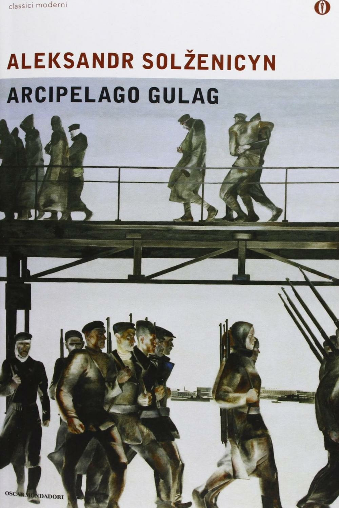

9:04 · 1 OPERA
“The Swedish Connection”, un film da non perdere.
Il filo del discorso
Recensione del film The Swedish Connection, che il relatore interpreta come racconto di coraggio morale dentro la burocrazia svedese durante la persecuzione nazista. L’attenzione si concentra sul diplomatico Gösta Engzell e sui collaboratori che cercano strumenti giuridici per aiutare i perseguitati. Il richiamo ad Arcipelago Gulag sostiene la riflessione sulla responsabilità individuale e sulla possibilità di scegliere il bene anche nelle istituzioni.
I libri nel discorso

Arcipelago Gulag
Copertina: Mondadori · Arcipelago Gulag · edizione di riferimento
Immagine associata all’ISBN di riferimento e controllata visivamente; edizione e traduzione non identificate come quelle citate o lette nel video.
Titolo e autore nominati prima del richiamo alla linea fra bene e male nel cuore umano.
Passaggio 3:22 ↗ · Fonti e libro ↗